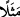
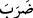
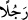
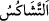
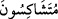
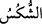
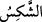
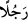
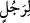
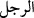

29. Allah, çekişip duran birçok ortakların sâhip olduğu bir adam (köle) ile yalnız
bir kişiye bağlı olan bir adamı misal olarak verir. Bu ikisi eşit midir? Hamd Allah’a
mahsustur. Fakat onların çoğu bilmezler.
“Allah, çekişip duran birçok ortakların sâhip olduğu bir adam (köle) ile yalnız bir
kişiye bağlı olan bir adamı misal olarak verir.” Burada misal vermekten maksad,
Yâsîn sûresinin başlarında da geçtiği gibi hayret verici bir durumun yine onun gibi
hayret verici bir başka duruma uyarlanması/karşılaştırılmasıdır.
“__WORD__ kelimesi “__WORD__nin ikinci mef’ûlü, “__WORD__ (bir adamı)” ise birinci mef’ûlüdür.
Birinci mef’ûlün ikinciden sonraya bırakılması, ona karşı merak uyandırmak ve onunla
ilgili temsilde esas olan tamamlayıcı lafızlarla bitişik olmasını sağlamak amacıyladır.
“__WORD__ birbirlerine kötülük etmek, kötü davranmak demektir.
el-Müfredât’ta şöyle der: “__WORD__ kötü huylu demektir. “__WORD__ ise huylarının
kötülüğü yüzünden çekişen ve tartışanlar, demektir.”
el-Kâmûs’ta der ki: “__WORD__ huyu çok zorlu, “__WORD__ ise cimri demektir. “__WORD__ ikna
olmaları zor bir tarzda ihtilaf edenler, demektir.”
Mânâ şöyledir: Allah Teâlâ, müşriğin kendi inancına göre mâbudlarından herbirinin
onun kendisine kulluk ettiği iddiâsında bulundukları bir müşrik için şöyle bir köleyi
misal getirdi: Birçok kimsenin ortak olduğu, şaşkın halde ve gönlü dağınık vaziyette
olan bu köleyi onlar kendilerine doğru çekmeye ve birbirinden ayrı işlerinde nöbetleşe
çalıştırmaya uğraşmaktadırlar.
“Yalnız bir kişiye bağlı olan bir adamı misal olarak verir.” Yâni Allah Teâlâ,
muvahhid için sadece bir kişiye bağlı olan ve üzerinde başka hiçbir kimsenin sözü
geçerli olmayan bir adamı misal verir.
Gerek “__WORD__ gerekse “__WORD__ lafızlarının nekre kılınmış olması, şahıslardan bir ferd ve
şahıslardan bir ferd için, demektir. “__WORD__ Âdem oğullarından erkek olan ve küçüklük
sınırını aşmış olanlara denir. Burada özellikle ‘adam’ın zikredilmiş olması, kendisini
ilgilendiren zarar ve fayda konusunda daha uyanık olmasıdır. Çünkü kadın ve çocuklar
bazen bunun farkında olmazlar.
“Bu ikisi” sıfat ve hal bakımından “eşit midir?” İstifham, inkârîdir. Yâni o ikisinin
halleri ve sıfatları eşit olur mu? Yâni ikisi eşit olmazlar, demektir.
Hâsılı kâfir ne yapacağını şaşırmış biri olması bakımından birinci köleye
benzemektedir. Çünkü farklı ilâhlara, yâni kendilerinden hiçbir hayır gelmeyecek,
aksine aşağıların aşağısına düşmesine sebep olacak birtakım putlara tapmaktadır.
Nitekim farklı arzu ve istekleri bulunan, zor ikna ve razı edilen birtakım sâhiplerin
hizmetindeki bir köleye de bunlardan hiçbir fayda gelmez. Mü’min ise ne yapacağını
bilmesi ve gönlünün derli toplu olması bakımından ikinci köleye benzemektedir. Çünkü
o, kendisini yücelerin yücesine ulaştıracak tek bir Efendi’ye kulluk etmektedir. Nitekim
tek bir efendiye hizmet eden bir köle de efendisinden razı olur ve efendisinden
kendisine bol ikramlar ulaşır.